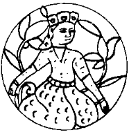

Sabah gerçekten çok iyi gitti işim. Çatıdan, evet, bu çatılan tavana çatı diyorlar, giren ışık akşam düşüp kaldığım yerde beni buldu. Gözlerime vurarak beni uyandırdı. Hemen Selcük’ün yalancı Töre’sine saldırdım. Okudukça gözlerime inanamıyor, aynı yeri bir kez daha okuyordum. Her şeyden önce, oğlumuzu beğenmiş miyim? İlk adını, benim aile adıma saygıdan dolayı Arsılan koymuşlar. Öbür adı da, bütün Aktürkleri toplasın, atalarının ilk toprağına, bu İdil sürgünlüğünden önceki söz verilmiş topraklara götürsün diye İsrail imiş. Yani Tanrı ile güreşen! Arsılan İsrail! Güzel ad! Tanrı’yla güreşen arslan demek. Kibar kadın şu Selcük. Bir tutsağın adını, yeni doğan yavrusuna veriyor! Hıaa... bu gerçekten benim oğlum... Benim!... “Sana aldandın dedim, anlamadın Tigin” diyor! Babasının gece karavaşının yerine geçmiş, Selcük kendi gelmiş, özü gelmiş! Mideme bir düğüm çöreklenip oturdu. Yukarı, gırtlağıma doğru çıkıyor!
Durum çakılmasın diye de Tanrı özünü yarlıgasın, babasının en sadık at uşaklarından Çonra Apa ile göstermelik bir evlilik yapmışlar. Gerçeği bir tek Dede Korkut biliyormuş. Çünkü o da Çonra’nın Selcük ile evlenebilmek için boşadığı karısı Boğazca Tügünlüg ile göstermelik bir evlilik yapmış! Çonra’ya güveni ammış, çünkü Çonra da benim gibi bir Köktürkmüş. Hatta ızaktan uğuşum, akrabam imiş. Geçenlerde Doğu Bozkırından gelen bir okdaşımız kişiden Mu Tsung’un Kitan hanı olduğunu ögrenmiş Çonra! Bunu bir sır gibi saklıyormuş. Çünkü bu Mu Tsung’un, Selcük burada yazamasa bile, benimle sıkı bir ilgisi farmış.
Son olarak da, Oğuz içindeki kendi boyu Kınık’a bililer bittiğini, yazılar döşendiğini, bütün Kınık’ın kanlarının son damlasıana kadar Tuğak ailesi için çarpışacaklarına and verdiğini, Kınık soluna baş koyan yiğitlerin kendisinden bir im beklediğini, ama Dede’nin bu işi geciktirdiğini yazıyordu Selcük!
Arkalı önlü yazılmış bir ağaç kabuğundan bu kadar çok şey öğrenmek beni sarsmıştı. Kapının açılıp içeriye günlük yemeğimin konduğunu fark etmedim bile. Onlar da benim okuduğum huş kabuğunda yazanları! Selcük! Arsılan İsrail... Küçük, yiğit oğlum... Tanrım, insan hem baba hem Maşiah olabilir mi? Demek Çonra denen alık, Köktürk imiş. Kim değil ki Selcük, kim değil ki! Dün gece bu sırrı çözdüm. Doğu Bozkın’ndan Hazar’a gelen Köktürkler, burada Aktürkler olarak biliniyor! Aman sak dur, aman tetik dur Selcük! Bu Çonra boşboğazın biri mi? Şu Mu Tsung söylentilerini o mu yayıyor? Yoksa Doğu’dan gelen okdaşımız mı? Ne demek okdaş, Selcük? Benim orada kimsem kalmadı. Arsılan uruğu yok oldu gitti. Gizli bir yakınım mı var? Gizlilikten bıktım Selcük. Bize yakın uruklardan biri mi? Ana soyum olan Barslanlardan mı? Yoksa soyumuzun kulluğunda bulunarak bizden olmuş emektar bir nöker mi?
Derin düşüncelerle, yemeğimin durduğu tahta tepsiyi alıp ışığımın altına getirdim. Günde üç öğün tuzlu balık yemekten bıktım. Susuyorum. İçim yanıyor. Suyum yetmiyor. Her zamanki gibi tuzlu balık, kara darı ekmeği ve acımış sudan oluşan yemeğime iğrenerek baktım. Ne yapıyorlar, bu suyu bol ülkede suyu acıtmak için? Balığı yemeyip, bir kenarda biriktirdiğim balık öbeğine fırlattım. Böylesi daha iyi. Ticaret için biriktiriyorum onları! Evet, Emgek denen uğruyla bir tür alışveriş geliştirdim. Bu balıklardan on tanesini verince bana tek bir yumurta, tek bir elma gibi ufak tefek yiyecekler getiriyor! O da mutlu bu işten. Bir kamu çalışanının aylığı ne olacak ki? Benden aldığı tuzlu balıkları satı pazar edince eline biraz akçe geçiyormuş yoksulun. Selcük’ün yazdıklarını bir kez daha okudum yemekten sonra. Bu Selcük şimdi benim neyim oluyor? Ya bu Dede neyi bekliyor? Gerçekten Kitanların bütün bozkırı geçip buraya kadar gelmesini mi? Ölme koca kulaklı kulanım ölme!
Bundan altı ay sonra, Selcük yine Çonra ve Arsılan İsrail ile geldi. Odamın kapısı açılıp içeri her zamankinden çok ışık dolunca, düşüp bayılıyorum sandım. Selcük karnı burnunda, güçlükle kapıdan sığıp içeri girdi. Çonra denen alçak da peşinden. Dayanamayıp patladım:
“Selcük, bana ha... bana ha... Töre’den de mi korkmuyorsun? Töre cinayetleri diye bir şey duymadın mı hayatta!”
“Tigin, artık kabul et! Seninle bir at yarıştırdık, beni geçtin diye bu kadar sahipleniş biraz fazla. Ayrıca Çonra benim erim, erkişim, kim ne karışır?” dediğinde Töre kabuklarını başına fırlatmak üzereydim. Kapının kapanmasıyla birlikte karnından kocaman, şişmiş bir oğlak tulumu çıkarınca, Töreyi töre cinayetine karıştırmaktan vazgeçiverdim! Gülmek istedim, koca kulaklar yanlış anlar diye kendimi tuttum!
Demek ki gebe olduğunu düşünsünler istiyor. Böylece kimse evliliğin göstermelik olduğunu anlamaz, ille çocuk doğurmak zorunda değil. Burada bozkırda, gebe olan her on kadından ancak beşi altısı sağlıklı doğum yapabiliyor. Akıllı kız! Yok yok, çok akıllı kız! Çünkü oğlak tulumunun içinden boynuz, kemik, ağaç, sicim, kiriş, balık tutkalı ve ufak bir çelik bıçak gibi, yay yapmaya yarayacak nesneleri çıkarıyor. Üç tane de kısaltılmış kamış ok tutuşturuyor elime. Temrenleri de birlikte. Tulumu şişiriyor, yerine koyuyor. İverek, dengimin içine dolduruyorum hepsini. Hemen ertesi gün sabahtan gün batıncaya dek ışığımın altında çalışarak, küçük, fakat çok sert bir atlı yayı yapıyorum.
Hepsi de çok becerikli bir ustanın elinden çıkmış parçalar, daha önce defalarca denendikleri için birbirine et ve tırnak gibi uyuyorlar. İş, hangi parçanın nereye gideceğini bulmakta. Boynuzlar yassıltılmış, cilalanmış, ağaç levhalar pek güzel kurutulmuş, sicim katrana batırılıp sağlamlaştırılmış, kiriş ne çok yaş ne düğümlenmeyecek kadar kuru... Oturup deneye yanıla, sert, katı bir yay yaptım. Denemek için kapıya bir ok attım. Yumuşak çam tahtasına yarım karıştan çok gömüldü ok. Çevresini bıçakla oya oya oku çıkarmak için yarım gün uğraştım. Sonra o koca oyuk çakılmasın diye, “penceremin” kenarından bir parça kestim. Yonttum. Gediğin boyuna uydurdum. Kalan son tutkalımla yapıştırdım. Hem penceremi büyütmüş oldum hem kapıyı eski durumuna getirdim. Penceremi büyütürken usuma bir düşünce girdi çıktı. Acaba bütün bir gece çalışıp bu deliği büyütsem buradan kaçabilir miyim diye düşündüm. Kulenin yüksekliğini düşününce caydım. Yarım gün de öyle geçti.
Okların üstüne, nedense Arsılan uruğunun simgesi olarak tanınmış dağ keçisini, bıçağın ucuyla çizdim. Artan bir sicim parçasıyla okları tam bellerinden bağladım. Çizmemin topuğunu kullanarak alçak kapının üst yanına bir kemik parçası çaktım. Okumla yayımı oraya astım. Yanımda başka kimse olmadığı için ok yalvarmasını kendim yaptım:
“Yarış gününde attığın ok yere düşmesin,
uğraş gününde yağmur yağmasın,
katı yayın yasılmasın,
Tanrı kapına başkasının okunu astırmasın!”
Gün ışığının asla ulaşmadığı bir yer. İçerden bakılınca onlarca görülmesinin oluru yok. Ancak benim karanlığa alışık gözlerim çok hafif bir karaltı seçiyor kapının üstünde. O da, biliyorum da o yüzden. Bir gün bu gizli yol köstebeklerinden biri yalnız gelir elbet. Hatta üç okla ikisini de temizleyebilirim.
Öğünden beri kendimi biraz daha güçlü hissediyorum. Daha güçlü. Evet, ama Sarkel halkının düşündüğü türden bir güç değil bu. Bir gün yine, tutsakçılarım, benim herhalde Azman atımın yanını çoktan boylamış olan kulanımı mezardan kaldırıp getirecek kadar uzun bir süredir beni dövüyorlardı, onlardan duydum. Sarkel halkı bu yaşadığım kuleye “Güç Kulesi” adını takmışmış. Emgek tutar İtbaş vurur, İtbaş tutar Emgek vururken: “Migdal Oz ha! Okumuşlardan değiliz diye dinsiz miyiz lan biz? Mektep midraş gören hiç mi arkadaşımız yok? Sorduk öğrendik, Güç Kulesi demekmiş!” veya:
“O gizli din sıçanlarına gizli söz gönderirsin ha!” türü tümceleri sil baştan yineleye yineleye, beni bir güzel dövdüler.
Sonunda acıya dayanamadım, bunların ikisinin de gizli din taşıyan kişiler olduğunu bildiğim için, birbirlerinin sırlarını bildiklerini ancak birbirlerinden sakladıklarını yüzlerine vurdum: “Yeter... yeter artık! Siz ikiniz de aynı yolun yolcusu değil misiniz? İkiniz de ayrı ayrı bana Köktürk olduğunuzu söylemediniz mi? Yetmez mi artık bildiğinizi bilmezden gelip bana ettiğiniz!” Emgek,
“O dediğin yol çatallandı Tigin, ben Akkaşım, o Karakaş!” dedi. ltbaş:
“Tigin, asıl ben Akkaşım, o Karakaş!” diye haykırdı.
Acıdan kasılmama ve patlak dudaklarıma karşın, gülümseyip babacan bir tutum alarak:
“Eh ağalar, gördünüz mü? Gizliliğin bir sınırı olmalı! Yoksa kardeş kardeşi tanımaz, oğul babayı; nerede kaldı siz ikiniz! Hadi, aynı yolun aynı sapağından olduğunuza göre sarılın, kucaklaşın, beni de salıverin gideyim, budun yollarımı gözler Maşiah deyu deyu...”
İkisi birden sol ellerinin işaret parmaklarını kendi göğüslerine bastırıp diğer ellerinin işaret parmağı ile karşıdakini göstererek: “Yalan söyledim! Ben Karakaşım, o Akkaş!” dediler.
“İyi ya, bakın, gerçek düşüncenizi saklama yönteminiz, yalanınız bile aynı, haydi ağalar, ben de Karakaşım, karadır kaşlarım, görmez misiniz? Hadi koyverin yoluma gideyim!”
Birbirlerine baktılar. Emgek, ltbaş’ın sol omzunu öptü, Itbaş da Emgek’in boynunun sağını. Sonra birbirlerine sarılıp sarmaştılar. Yıllardır şu Migdal Oz’un içinde olmalarına karşın, gizli kapaklılıktan dolayı birbirlerini bulamayan bu iki sapakdaşın acıklı öyküsü, neredeyse beni ağlatacaktı. Yer bırakmadılar. Anlaşılan, ltbaş’ın yoldaki yeri Emgek’ten daha yukarıda idi. Hep o konuşuyordu artık.
“Tigin, sık ormanda yolunu yitirmiş çocuklardık, bizi yolumuza getirdin, yuvadan düşmüş kuş cücüğü gibi idik, sevecen ellerinle bizi alıp geri koydun...”
Bu yıkama yağlamaların arkasından yerlere kapanarak özür dileyeceklerini, önümde el pençe divan duracaklarını sanıyordum. Yalan yok, “Acaba yayımı istesem onu da alabilir miyim?” diye bile düşündüm. Bönlük işte. Itbaş konuşmayı sürdürüyordu:
“Canımızı iste verelim Tigin! Ama buradan seni koyveremeyiz. Bak özel evimizde kulumuz olsaydın, başka. O zaman seni hem salardık hem de üstüne at pusat verirdik! Ama burası Migdal Oz, Burası Igor Ağa’nın içkievi değil, burası Güç Kulesi. Bizler kamunun tutsakçılarıyız, sen kamunun tutsağısın, burası da kamusal bir alan sayılır. O yüzdeen...
Sözünü bitirmedi. İkisi birden üzerime atıldılar. Öyle uyumlu vuruyorlar, sevdikleri noktaları birbirlerine sunarken o kadar saygılı davranıyorlardı ki, kişioğlunun inanç birliği içinde olduğu zaman neler yapabileceğinin canlı birer kanıtı gibiydiler. Halt etmiştim galiba. Tekmeler tokatlar altında yıkıldığım yerde kendimden geçer gibi yaptım. Nedense, bilinci açık olmayan birine pek ilişmiyorlar. Vuruşlarındaki inceliği, güzelliği fark edemez de onlara hayran mı olamaz, bu korku mudur? Nedir, bilmiyorum ama işe yarıyor. Yoluyla yapmak gerek tabii. Öyle bayılır bayılmaz bırakmıyorlar adamı. Bir iki sağlam vuruşa değil ses çıkarmak, inlemek, soluk bile almadan katlanacaksın ki bayıldığına inansınlar!